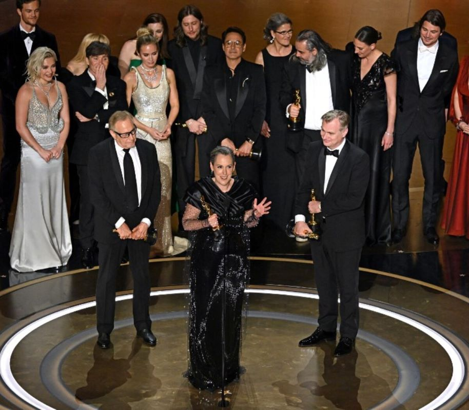
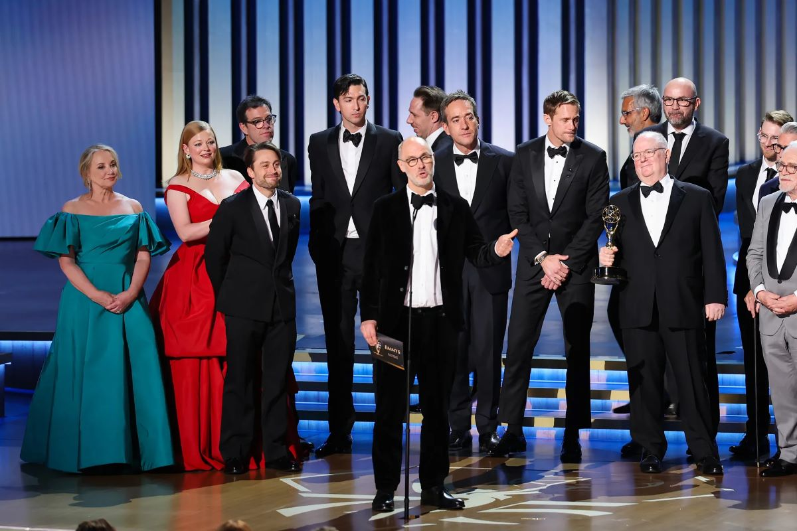

Oscars: Mejor Película - Oppenheimer
“Oppenheimer”, una solemne película biográfica de tres horas que se convirtió en una improbable sensación de taquilla y recaudó miles de millones de dólares, fue coronada como mejor película en la 96ª edición de los Premios de la Academia, que también sirvió como reafirmación para Christopher Nolan.
Después de pasar por alto al que posiblemente sea el autor más importante de Hollywood de los últimos años, los Oscar recuperaron el tiempo perdido al otorgar siete premios para el filme de Nolan, incluido el de mejor actor para Cillian Murphy, mejor actor de reparto para Robert Downey Jr. y mejor dirección para Nolan.
Al ungir a “Oppenheimer”, la Academia de las Artes y Ciencias Cinematográficas hizo algo que no había realizado en más de una década: conceder su máximo galardón a una película de estudio de gran presupuesto y ampliamente vista. En una industria cinematográfica en la que una capa, un dinosaurio o Tom Cruise han sido a menudo un requisito para la taquilla, “Oppenheimer” atrajo a multitudes de cinéfilos con un drama complejo y lleno de fisión sobre J. Robert Oppenheimer y la creación de la bomba atómica.
“Para bien o para mal, todos vivimos en el mundo de Robert Oppenheimer”, dijo Murphy en su discurso de aceptación. “Me gustaría dedicar esto a los pacificadores”.
Emmys: Mejor Serie - Succession
Succession (HBO), ganadora como mejor serie de drama, triunfó con seis premios (de un total de 27 nominaciones). El primero fue para Matthew Macfadyen, mejor actor de reparto: “Gracias a mi esposa de la pantalla, Sarah Snook, y mi otra esposa, Nicholas Braun”, bromeaba sobre sus dos principales apoyos dramáticos en la serie. “Actuar con vosotros es una de las mejores cosas que me ha pasado en toda mi vida”.
El segundo fue para Kieran Culkin por bordar su papel del insoportable Roman Roy: “Gracias a mi madre por darme la vida y mi niñez, que fue estupenda”, afirmaba emocionado, tirando la chaqueta al escenario, nervioso y acalorado, además de bromista con su esposa, Jazz Charton, sentada entre el público, a la que le dio las gracias por sus dos hijas: “Jazz, quiero tener más. Dijiste que a lo mejor. Te quiero mucho”.
Y el tercero para la australiana Sarah Snook, la taimada Shiv Roy, que afirmó que, con el fin de la serie, va a “echar mucho de menos” a sus compañeros de reparto. Además, la producción se llevó los de mejor guion y mejor dirección de una serie de drama por su brillante capítulo La boda de Connor, y el premio gordo, mejor serie dramática, que recogió todo el elenco, abrazándose en escena, de la mano de su creador, Jesse Armstrong, que habló de la relación entre las familias, el poder y los medios de comunicación: “Estamos tristes de que esto acabe, pero muy honrados, nos ha encantado hacer esto”.